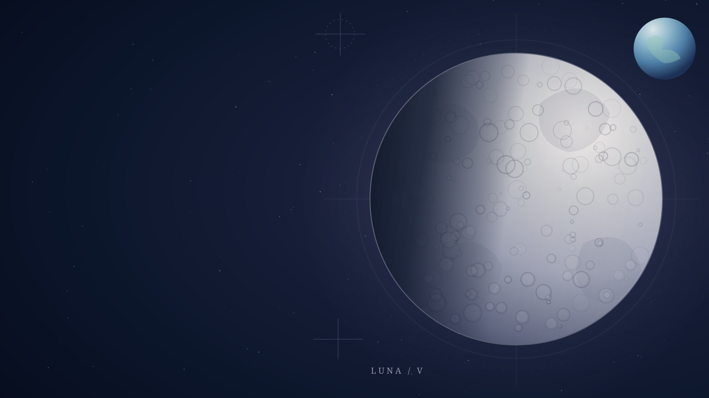

OPOWIEŚĆ O RUCHU, KTÓREGO NIE WIDAĆ
Zawsze ta sama twarz. Nigdy ten sam Księżyc.
Co noc wygląda trochę inaczej. Bywa cienkim sierpem, olśniewającą pełnią albo znika w blasku dnia. A mimo to przez całe życie patrzymy prawie na te same kratery. Jak to możliwe?
Dlaczego Księżyc nie obraca się do nas plecami?
Przypomnij sobie jasną pełnię. Widzisz na niej ciemniejsze plamy, które od dawna ludzie porównywali do twarzy, zwierząt i postaci. Za miesiąc możesz spojrzeć ponownie. Układ tych plam będzie prawie identyczny.
Najprostsza odpowiedź wydaje się oczywista: Księżyc nie obraca się wokół własnej osi. Tyle że właśnie ta odpowiedź jest błędna.
Księżyc obraca się. W czasie jednego okrążenia Ziemi wykonuje też jeden obrót wokół własnej osi. Właśnie dlatego mniej więcej ta sama jego półkula jest skierowana do nas przez cały czas. Ten szczególny układ nazywa się rotacją synchroniczną, związaną z długotrwałym oddziaływaniem pływowym. [1, 2]
Gdyby nie obracał się w ogóle, podczas okrążenia odsłaniałby nam kolejno wszystkie strony. To obrót pozwala mu zachować tę samą twarz.
On nie stoi nieruchomo. On obraca się dokładnie w takim rytmie, jak trzeba.
Wyobraź sobie, że okrążasz stół i przez cały czas patrzysz na jego środek.
Zacznij od jednej strony stołu. Przejdź ćwierć okręgu, stale patrząc w środek: Twoje ciało obróci się o ćwierć obrotu. Przejdź dookoła cały stół — wykonasz cały obrót. Księżyc robi coś podobnego, choć oczywiście nie wybiera świadomie kierunku patrzenia.
Patrzy na Ziemię
Widoczna strona skierowana jest ku środkowi układu.
Obrócił się o 90°
Mimo zmiany położenia cały czas pokazuje nam tę samą stronę.
Obrócił się o 180°
W połowie drogi obrócił się także o pół obrotu.
Obrócił się o 360°
Wrócił w to samo miejsce i w tym samym ustawieniu.
Statyczny schemat czterech etapów rotacji synchronicznej, widziany umownie znad północnego bieguna Ziemi. Ciała i odległości nie są narysowane w skali. Rzeczywista orbita Księżyca jest eliptyczna, a jego widoczna orientacja nie jest doskonale stała.
Jeden miesiąc trwa 27,3 dnia. A drugi 29,5 dnia.
Nie ma w tym sprzeczności. Około 27,3 dnia potrzeba, by Księżyc wrócił do tego samego położenia względem odległych gwiazd. Natomiast od nowiu do następnego nowiu mija średnio około 29,5 dnia. [1, 3]
Miesiąc gwiazdowy
W tym czasie Księżyc wykonuje jeden obieg względem dalekich gwiazd i jeden obrót wokół własnej osi.
Miesiąc synodyczny
Ziemia w tym czasie również okrąża Słońce. Księżyc musi więc pokonać dodatkowy odcinek orbity, by ustawić się tak samo względem światła słonecznego.
To średnie okresy. Konkretne odstępy między fazami różnią się nieznacznie wskutek geometrii i zmiennej prędkości orbitalnej.
Przez całą historię patrzyliśmy na znajomą stronę. Aż sonda spojrzała za krawędź.
Radziecka sonda Łuna 3 przesłała pierwsze obrazy niewidocznej z Ziemi półkuli Księżyca. Fotografie były niedoskonałe, ale ujawniły rzecz zdumiewającą: druga strona wygląda inaczej. Zamiast rozległych ciemnych mórz zastygłej lawy dominują tam jaśniejsze wyżyny, gęsto pokryte kraterami. [4]

Strona widoczna
Ciemne obszary — maria, księżycowe morza — są równinami bazaltowymi, nie zbiornikami wody.

Strona niewidoczna
Dominują tam rozległe kraterowe wyżyny. Dopiero misje kosmiczne pozwoliły sporządzić jej szczegółową mapę.
Oba obrazy to opracowania danych kamer Lunar Reconnaissance Orbiter, a nie fotografie wykonane jednocześnie z jednego punktu. NASA/GSFC/Arizona State University. Źródła: strona bliższa i strona dalsza.
„Ciemna strona Księżyca” to mylące określenie. Daleka strona również ma dzień i noc. Podczas nowiu jest nawet zwrócona ku Słońcu i w dużej części oświetlona. Nie jest wiecznie pogrążona w ciemności. [2]
Księżyc nie zmienia kształtu. Zmienia się to, ile światła widzimy.
Słońce niemal zawsze oświetla połowę księżycowej kuli. W miarę jak Księżyc obiega Ziemię, z naszej perspektywy widzimy różną część tej oświetlonej półkuli. Przesuń suwak, by zobaczyć fazy oraz położenie Księżyca względem Słońca. [1]
Zakres naukowy: to dydaktyczny model faz przy orbicie kołowej, stałym kierunku światła słonecznego i stałej orientacji widoku. Suwak obejmuje umowny średni miesiąc synodyczny 29,53 dnia. Pomija mimośród orbity, nachylenie do ekliptyki, librację, zmiany odległości i dokładne daty. W szczególności położenia nie służą do przewidywania zaćmień; węzły orbity zwykle pozwalają Księżycowi minąć linię Ziemia–Słońce powyżej lub poniżej niej.
To nie Ziemia trzyma Księżyc na sznurku. Oba światy podlegają grawitacji.
Ziemia i Księżyc krążą wokół wspólnego środka masy — barycentrum. Ponieważ Ziemia ma ponad 80 razy większą masę od Księżyca, barycentrum zwykle znajduje się około 4670 km od środka Ziemi, wewnątrz naszej planety. [5]
Odległość środków. W rzeczywistości stale zmienia się na eliptycznej orbicie.
O tyle mniej więcej rośnie średnia odległość Księżyca, mierzona między innymi laserowo. [6]
Dzięki libracji w różnych momentach widzimy nieco poza brzeg tej samej półkuli. [7]
Przyciąganie Księżyca ma udział w powstawaniu pływów oceanicznych. Nie oznacza to jednak, że przypływ zawsze występuje dokładnie pod Księżycem. Kształt mórz, głębokość, obrót Ziemi i grawitacja Słońca sprawiają, że lokalne przypływy są znacznie bardziej złożone. [8]
Nie ma dwóch Księżyców. Jest jeden, który uczymy się oglądać inaczej.
Ziemia wyznacza nam miejsce obserwacji. Słońce rzeźbi światłem kolejne fazy. Grawitacja wiąże oba ciała, a delikatne ruchy Księżyca pozwalają stopniowo zajrzeć za krawędź znajomej tarczy. Gdy włączysz na końcu planetarium, nie patrz już tylko na kształt sierpa. Spróbuj zobaczyć w nim całą trójwymiarową geometrię.
Teraz sprawdź, czy potrafisz przewidzieć to, co zobaczysz.
Odnajdź znajomą tarczę.
Wybierz Księżyc i zmień pozycję kamery. Poszukaj różnicy między wyglądem tarczy a położeniem obiektu na orbicie.
Przesuń się o tydzień.
Porównaj ustawienie Słońce–Ziemia–Księżyc w odstępie około siedmiu dni. Sprawdź, skąd bierze się inna faza.
Spójrz znad orbity.
Odwróć kamerę od Ziemi. Spróbuj wyobrazić sobie widok z jej drugiej strony i zwróć uwagę na położenie Słońca.
Pamiętasz terminator?
Wróć do widoku Ziemi. Porównaj granicę dnia i nocy na naszej planecie z granicą oświetlenia na Księżycu.
Granice symulatora: współczesny silnik ATLAS SOLARIS modeluje ruch planet przy użyciu przybliżonych elementów NASA/JPL i ma edukacyjne przybliżenia geometrii Księżyca. Widok 3D jest ilustracją, nie precyzyjną efemerydą, nie odwzorowuje szczegółowo libracji ani powierzchni Księżyca w pełnej rozdzielczości LRO. Ciężki renderer uruchomi się wyłącznie po kliknięciu przycisku.